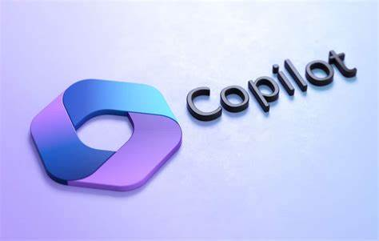
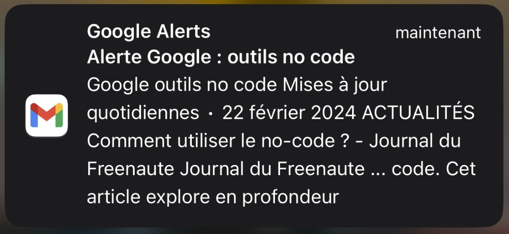

Pour mener à bien cette veille, j'ai eu à utiliser plusieurs outils de veille dont:
Microsoft Copilot

Microsoft Copilot est un chatbot développé par Microsoft et lancé le 7 février 2023. Basé sur un grand modèle de langage, il m'a permis d'avoir des références vers articles qui parlent de No-Code, de générer des requêtes Google, générer des images illustratives, ...
Google Alertes
Il m'a permit de créer des alertes Google pour les termes pertinents liés aux outils No-Code, tels que les noms des principaux outils, les tendances du marché et les nouvelles fonctionnalités. J'ai configuré ces alertes pour recevoir des notifications par e-mail dès qu'il y a de nouvelles informations pertinentes.

Example d'alerte reçu par E-mail
Example d'alerte reçu par E-mail
Google Scholar
J'ai utilisé Google Scholar pour rechercher des articles académiques, des études de cas et des publications de recherche sur les outils No-Code. J'ai pu trouver des informations approfondies et des analyses critiques sur les tendances et les évolutions dans ce domaine.